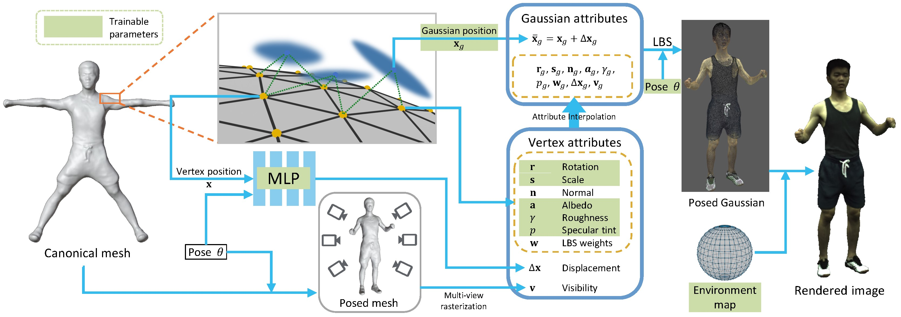
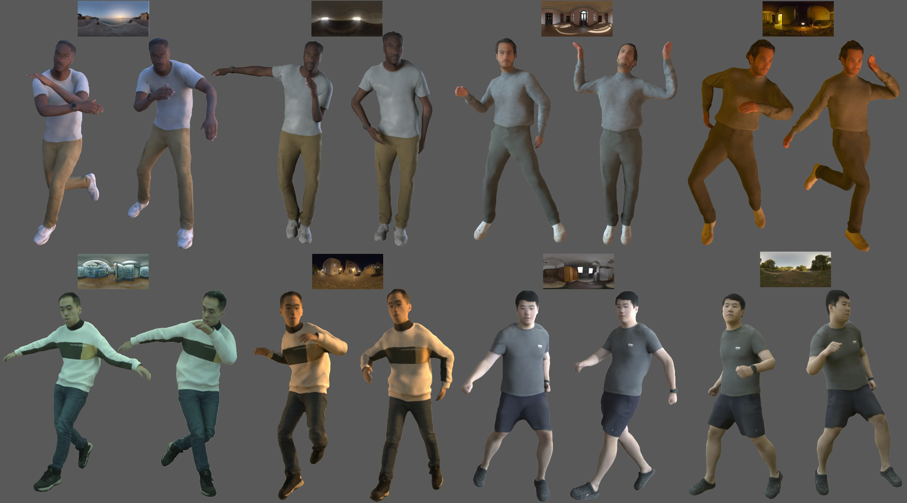

Creating relightable and animatable avatars from multi-view or monocular videos is a challenging task for digital human creation and virtual reality applications. Previous methods rely on neural radiance fields or ray tracing, resulting in slow training and rendering processes. By utilizing Gaussian Splatting, we propose a simple and efficient method to decouple body materials and lighting from sparse-view or monocular avatar videos, so that the avatar can be rendered simultaneously under novel viewpoints, poses, and lightings at interactive frame rates (6.9 fps). Specifically, we first obtain the canonical body mesh using a signed distance function and assign attributes to each mesh vertex. The Gaussians in the canonical space then interpolate from nearby body mesh vertices to obtain the attributes. We subsequently deform the Gaussians to the posed space using forward skinning, and combine the learnable environment light with the Gaussian attributes for shading computation. To achieve fast shadow modeling, we rasterize the posed body mesh from dense viewpoints to obtain the visibility. Our approach is not only simple but also fast enough to allow interactive rendering of avatar animation under environmental light changes. Experiments demonstrate that, compared to previous works, our method can render higher quality results at a faster speed on both synthetic and real datasets.


@article{zhan2024interactive,
title={Interactive Rendering of Relightable and Animatable Gaussian Avatars},
author={Zhan, Youyi and Shao, Tianjia and Wang, He and Yang, Yin and Zhou, Kun},
journal={arXiv preprint arXiv:2407.10707},
year={2024}
}